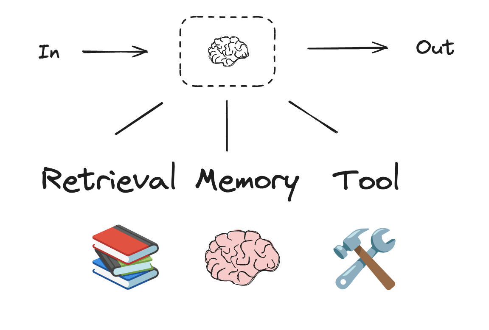
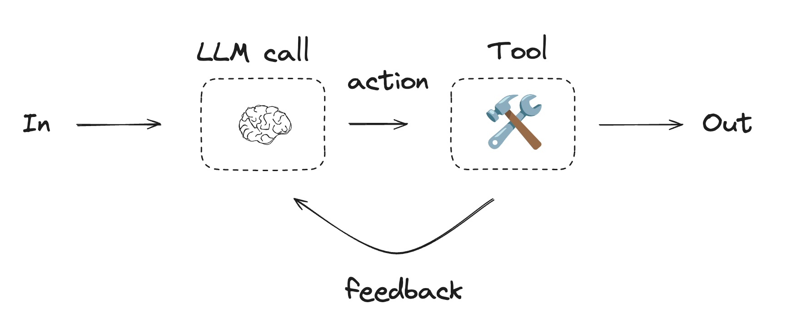

Workflows and Agents¶
This guide reviews common patterns for agentic systems. In describing these systems, it can be useful to make a distinction between "workflows" and "agents". One way to think about this difference is nicely explained here by Anthropic:
Workflows are systems where LLMs and tools are orchestrated through predefined code paths. Agents, on the other hand, are systems where LLMs dynamically direct their own processes and tool usage, maintaining control over how they accomplish tasks.
Here is a simple way to visualize these differences:

When building agents and workflows, LangGraph offers a number of benefits including persistence, streaming, and support for debugging as well as deployment.
Set up¶
You can use any chat model that supports structured outputs and tool calling. Below, we show the process of installing the packages, setting API keys, and testing structured outputs / tool calling for Anthropic.
Initialize an LLM
import os
import getpass
from langchain_anthropic import ChatAnthropic
def _set_env(var: str):
if not os.environ.get(var):
os.environ[var] = getpass.getpass(f"{var}: ")
_set_env("ANTHROPIC_API_KEY")
llm = ChatAnthropic(model="claude-3-5-sonnet-latest")
API Reference: ChatAnthropic
Building Blocks: The Augmented LLM¶
LLM have augmentations that support building workflows and agents. These include structured outputs and tool calling, as shown in this image from the Anthropic blog:

# Schema for structured output
from pydantic import BaseModel, Field
class SearchQuery(BaseModel):
search_query: str = Field(None, description="Query that is optimized web search.")
justification: str = Field(
None, description="Why this query is relevant to the user's request."
)
# Augment the LLM with schema for structured output
structured_llm = llm.with_structured_output(SearchQuery)
# Invoke the augmented LLM
output = structured_llm.invoke("How does Calcium CT score relate to high cholesterol?")
# Define a tool
def multiply(a: int, b: int) -> int:
return a * b
# Augment the LLM with tools
llm_with_tools = llm.bind_tools([multiply])
# Invoke the LLM with input that triggers the tool call
msg = llm_with_tools.invoke("What is 2 times 3?")
# Get the tool call
msg.tool_calls
Prompt chaining¶
In prompt chaining, each LLM call processes the output of the previous one.
As noted in the Anthropic blog:
Prompt chaining decomposes a task into a sequence of steps, where each LLM call processes the output of the previous one. You can add programmatic checks (see "gate in the diagram below) on any intermediate steps to ensure that the process is still on track.
When to use this workflow: This workflow is ideal for situations where the task can be easily and cleanly decomposed into fixed subtasks. The main goal is to trade off latency for higher accuracy, by making each LLM call an easier task.

from typing_extensions import TypedDict
from langgraph.graph import StateGraph, START, END
from IPython.display import Image, display
# Graph state
class State(TypedDict):
topic: str
joke: str
improved_joke: str
final_joke: str
# Nodes
def generate_joke(state: State):
"""First LLM call to generate initial joke"""
msg = llm.invoke(f"Write a short joke about {state['topic']}")
return {"joke": msg.content}
def check_punchline(state: State):
"""Gate function to check if the joke has a punchline"""
# Simple check - does the joke contain "?" or "!"
if "?" in state["joke"] or "!" in state["joke"]:
return "Fail"
return "Pass"
def improve_joke(state: State):
"""Second LLM call to improve the joke"""
msg = llm.invoke(f"Make this joke funnier by adding wordplay: {state['joke']}")
return {"improved_joke": msg.content}
def polish_joke(state: State):
"""Third LLM call for final polish"""
msg = llm.invoke(f"Add a surprising twist to this joke: {state['improved_joke']}")
return {"final_joke": msg.content}
# Build workflow
workflow = StateGraph(State)
# Add nodes
workflow.add_node("generate_joke", generate_joke)
workflow.add_node("improve_joke", improve_joke)
workflow.add_node("polish_joke", polish_joke)
# Add edges to connect nodes
workflow.add_edge(START, "generate_joke")
workflow.add_conditional_edges(
"generate_joke", check_punchline, {"Fail": "improve_joke", "Pass": END}
)
workflow.add_edge("improve_joke", "polish_joke")
workflow.add_edge("polish_joke", END)
# Compile
chain = workflow.compile()
# Show workflow
display(Image(chain.get_graph().draw_mermaid_png()))
# Invoke
state = chain.invoke({"topic": "cats"})
print("Initial joke:")
print(state["joke"])
print("\n--- --- ---\n")
if "improved_joke" in state:
print("Improved joke:")
print(state["improved_joke"])
print("\n--- --- ---\n")
print("Final joke:")
print(state["final_joke"])
else:
print("Joke failed quality gate - no punchline detected!")
LangSmith Trace
https://smith.langchain.com/public/a0281fca-3a71-46de-beee-791468607b75/r
Resources:
LangChain Academy
See our lesson on Prompt Chaining here.
from langgraph.func import entrypoint, task
# Tasks
@task
def generate_joke(topic: str):
"""First LLM call to generate initial joke"""
msg = llm.invoke(f"Write a short joke about {topic}")
return msg.content
def check_punchline(joke: str):
"""Gate function to check if the joke has a punchline"""
# Simple check - does the joke contain "?" or "!"
if "?" in joke or "!" in joke:
return "Fail"
return "Pass"
@task
def improve_joke(joke: str):
"""Second LLM call to improve the joke"""
msg = llm.invoke(f"Make this joke funnier by adding wordplay: {joke}")
return msg.content
@task
def polish_joke(joke: str):
"""Third LLM call for final polish"""
msg = llm.invoke(f"Add a surprising twist to this joke: {joke}")
return msg.content
@entrypoint()
def parallel_workflow(topic: str):
original_joke = generate_joke(topic).result()
if check_punchline(original_joke) == "Pass":
return original_joke
improved_joke = improve_joke(original_joke).result()
return polish_joke(improved_joke).result()
# Invoke
for step in parallel_workflow.stream("cats", stream_mode="updates"):
print(step)
print("\n")
LangSmith Trace
https://smith.langchain.com/public/332fa4fc-b6ca-416e-baa3-161625e69163/r
Parallelization¶
With parallelization, LLMs work simultaneously on a task:
LLMs can sometimes work simultaneously on a task and have their outputs aggregated programmatically. This workflow, parallelization, manifests in two key variations: Sectioning: Breaking a task into independent subtasks run in parallel. Voting: Running the same task multiple times to get diverse outputs.
When to use this workflow: Parallelization is effective when the divided subtasks can be parallelized for speed, or when multiple perspectives or attempts are needed for higher confidence results. For complex tasks with multiple considerations, LLMs generally perform better when each consideration is handled by a separate LLM call, allowing focused attention on each specific aspect.

# Graph state
class State(TypedDict):
topic: str
joke: str
story: str
poem: str
combined_output: str
# Nodes
def call_llm_1(state: State):
"""First LLM call to generate initial joke"""
msg = llm.invoke(f"Write a joke about {state['topic']}")
return {"joke": msg.content}
def call_llm_2(state: State):
"""Second LLM call to generate story"""
msg = llm.invoke(f"Write a story about {state['topic']}")
return {"story": msg.content}
def call_llm_3(state: State):
"""Third LLM call to generate poem"""
msg = llm.invoke(f"Write a poem about {state['topic']}")
return {"poem": msg.content}
def aggregator(state: State):
"""Combine the joke and story into a single output"""
combined = f"Here's a story, joke, and poem about {state['topic']}!\n\n"
combined += f"STORY:\n{state['story']}\n\n"
combined += f"JOKE:\n{state['joke']}\n\n"
combined += f"POEM:\n{state['poem']}"
return {"combined_output": combined}
# Build workflow
parallel_builder = StateGraph(State)
# Add nodes
parallel_builder.add_node("call_llm_1", call_llm_1)
parallel_builder.add_node("call_llm_2", call_llm_2)
parallel_builder.add_node("call_llm_3", call_llm_3)
parallel_builder.add_node("aggregator", aggregator)
# Add edges to connect nodes
parallel_builder.add_edge(START, "call_llm_1")
parallel_builder.add_edge(START, "call_llm_2")
parallel_builder.add_edge(START, "call_llm_3")
parallel_builder.add_edge("call_llm_1", "aggregator")
parallel_builder.add_edge("call_llm_2", "aggregator")
parallel_builder.add_edge("call_llm_3", "aggregator")
parallel_builder.add_edge("aggregator", END)
parallel_workflow = parallel_builder.compile()
# Show workflow
display(Image(parallel_workflow.get_graph().draw_mermaid_png()))
# Invoke
state = parallel_workflow.invoke({"topic": "cats"})
print(state["combined_output"])
LangSmith Trace
https://smith.langchain.com/public/3be2e53c-ca94-40dd-934f-82ff87fac277/r
Resources:
Documentation
See our documentation on parallelization here.
LangChain Academy
See our lesson on parallelization here.
@task
def call_llm_1(topic: str):
"""First LLM call to generate initial joke"""
msg = llm.invoke(f"Write a joke about {topic}")
return msg.content
@task
def call_llm_2(topic: str):
"""Second LLM call to generate story"""
msg = llm.invoke(f"Write a story about {topic}")
return msg.content
@task
def call_llm_3(topic):
"""Third LLM call to generate poem"""
msg = llm.invoke(f"Write a poem about {topic}")
return msg.content
@task
def aggregator(topic, joke, story, poem):
"""Combine the joke and story into a single output"""
combined = f"Here's a story, joke, and poem about {topic}!\n\n"
combined += f"STORY:\n{story}\n\n"
combined += f"JOKE:\n{joke}\n\n"
combined += f"POEM:\n{poem}"
return combined
# Build workflow
@entrypoint()
def parallel_workflow(topic: str):
joke_fut = call_llm_1(topic)
story_fut = call_llm_2(topic)
poem_fut = call_llm_3(topic)
return aggregator(
topic, joke_fut.result(), story_fut.result(), poem_fut.result()
).result()
# Invoke
for step in parallel_workflow.stream("cats", stream_mode="updates"):
print(step)
print("\n")
LangSmith Trace
https://smith.langchain.com/public/623d033f-e814-41e9-80b1-75e6abb67801/r
Routing¶
Routing classifies an input and directs it to a followup task. As noted in the Anthropic blog:
Routing classifies an input and directs it to a specialized followup task. This workflow allows for separation of concerns, and building more specialized prompts. Without this workflow, optimizing for one kind of input can hurt performance on other inputs.
When to use this workflow: Routing works well for complex tasks where there are distinct categories that are better handled separately, and where classification can be handled accurately, either by an LLM or a more traditional classification model/algorithm.

from typing_extensions import Literal
from langchain_core.messages import HumanMessage, SystemMessage
# Schema for structured output to use as routing logic
class Route(BaseModel):
step: Literal["poem", "story", "joke"] = Field(
None, description="The next step in the routing process"
)
# Augment the LLM with schema for structured output
router = llm.with_structured_output(Route)
# State
class State(TypedDict):
input: str
decision: str
output: str
# Nodes
def llm_call_1(state: State):
"""Write a story"""
result = llm.invoke(state["input"])
return {"output": result.content}
def llm_call_2(state: State):
"""Write a joke"""
result = llm.invoke(state["input"])
return {"output": result.content}
def llm_call_3(state: State):
"""Write a poem"""
result = llm.invoke(state["input"])
return {"output": result.content}
def llm_call_router(state: State):
"""Route the input to the appropriate node"""
# Run the augmented LLM with structured output to serve as routing logic
decision = router.invoke(
[
SystemMessage(
content="Route the input to story, joke, or poem based on the user's request."
),
HumanMessage(content=state["input"]),
]
)
return {"decision": decision.step}
# Conditional edge function to route to the appropriate node
def route_decision(state: State):
# Return the node name you want to visit next
if state["decision"] == "story":
return "llm_call_1"
elif state["decision"] == "joke":
return "llm_call_2"
elif state["decision"] == "poem":
return "llm_call_3"
# Build workflow
router_builder = StateGraph(State)
# Add nodes
router_builder.add_node("llm_call_1", llm_call_1)
router_builder.add_node("llm_call_2", llm_call_2)
router_builder.add_node("llm_call_3", llm_call_3)
router_builder.add_node("llm_call_router", llm_call_router)
# Add edges to connect nodes
router_builder.add_edge(START, "llm_call_router")
router_builder.add_conditional_edges(
"llm_call_router",
route_decision,
{ # Name returned by route_decision : Name of next node to visit
"llm_call_1": "llm_call_1",
"llm_call_2": "llm_call_2",
"llm_call_3": "llm_call_3",
},
)
router_builder.add_edge("llm_call_1", END)
router_builder.add_edge("llm_call_2", END)
router_builder.add_edge("llm_call_3", END)
# Compile workflow
router_workflow = router_builder.compile()
# Show the workflow
display(Image(router_workflow.get_graph().draw_mermaid_png()))
# Invoke
state = router_workflow.invoke({"input": "Write me a joke about cats"})
print(state["output"])
LangSmith Trace
https://smith.langchain.com/public/c4580b74-fe91-47e4-96fe-7fac598d509c/r
Resources:
LangChain Academy
See our lesson on routing here.
Examples
Here is RAG workflow that routes questions. See our video here.
from typing_extensions import Literal
from pydantic import BaseModel
from langchain_core.messages import HumanMessage, SystemMessage
# Schema for structured output to use as routing logic
class Route(BaseModel):
step: Literal["poem", "story", "joke"] = Field(
None, description="The next step in the routing process"
)
# Augment the LLM with schema for structured output
router = llm.with_structured_output(Route)
@task
def llm_call_1(input_: str):
"""Write a story"""
result = llm.invoke(input_)
return result.content
@task
def llm_call_2(input_: str):
"""Write a joke"""
result = llm.invoke(input_)
return result.content
@task
def llm_call_3(input_: str):
"""Write a poem"""
result = llm.invoke(input_)
return result.content
def llm_call_router(input_: str):
"""Route the input to the appropriate node"""
# Run the augmented LLM with structured output to serve as routing logic
decision = router.invoke(
[
SystemMessage(
content="Route the input to story, joke, or poem based on the user's request."
),
HumanMessage(content=input_),
]
)
return decision.step
# Create workflow
@entrypoint()
def router_workflow(input_: str):
next_step = llm_call_router(input_)
if next_step == "story":
llm_call = llm_call_1
elif next_step == "joke":
llm_call = llm_call_2
elif next_step == "poem":
llm_call = llm_call_3
return llm_call(input_).result()
# Invoke
for step in router_workflow.stream("Write me a joke about cats", stream_mode="updates"):
print(step)
print("\n")
LangSmith Trace
https://smith.langchain.com/public/5e2eb979-82dd-402c-b1a0-a8cceaf2a28a/r
Orchestrator-Worker¶
With orchestrator-worker, an orchestrator breaks down a task and delegates each sub-task to workers. As noted in the Anthropic blog:
In the orchestrator-workers workflow, a central LLM dynamically breaks down tasks, delegates them to worker LLMs, and synthesizes their results.
When to use this workflow: This workflow is well-suited for complex tasks where you cant predict the subtasks needed (in coding, for example, the number of files that need to be changed and the nature of the change in each file likely depend on the task). Whereas its topographically similar, the key difference from parallelization is its flexibilitysubtasks aren't pre-defined, but determined by the orchestrator based on the specific input.

from typing import Annotated, List
import operator
# Schema for structured output to use in planning
class Section(BaseModel):
name: str = Field(
description="Name for this section of the report.",
)
description: str = Field(
description="Brief overview of the main topics and concepts to be covered in this section.",
)
class Sections(BaseModel):
sections: List[Section] = Field(
description="Sections of the report.",
)
# Augment the LLM with schema for structured output
planner = llm.with_structured_output(Sections)
Creating Workers in LangGraph
Because orchestrator-worker workflows are common, LangGraph has the Send API to support this. It lets you dynamically create worker nodes and send each one a specific input. Each worker has its own state, and all worker outputs are written to a shared state key that is accessible to the orchestrator graph. This gives the orchestrator access to all worker output and allows it to synthesize them into a final output. As you can see below, we iterate over a list of sections and Send each to a worker node. See further documentation here and here.
from langgraph.constants import Send
# Graph state
class State(TypedDict):
topic: str # Report topic
sections: list[Section] # List of report sections
completed_sections: Annotated[
list, operator.add
] # All workers write to this key in parallel
final_report: str # Final report
# Worker state
class WorkerState(TypedDict):
section: Section
completed_sections: Annotated[list, operator.add]
# Nodes
def orchestrator(state: State):
"""Orchestrator that generates a plan for the report"""
# Generate queries
report_sections = planner.invoke(
[
SystemMessage(content="Generate a plan for the report."),
HumanMessage(content=f"Here is the report topic: {state['topic']}"),
]
)
return {"sections": report_sections.sections}
def llm_call(state: WorkerState):
"""Worker writes a section of the report"""
# Generate section
section = llm.invoke(
[
SystemMessage(
content="Write a report section following the provided name and description. Include no preamble for each section. Use markdown formatting."
),
HumanMessage(
content=f"Here is the section name: {state['section'].name} and description: {state['section'].description}"
),
]
)
# Write the updated section to completed sections
return {"completed_sections": [section.content]}
def synthesizer(state: State):
"""Synthesize full report from sections"""
# List of completed sections
completed_sections = state["completed_sections"]
# Format completed section to str to use as context for final sections
completed_report_sections = "\n\n---\n\n".join(completed_sections)
return {"final_report": completed_report_sections}
# Conditional edge function to create llm_call workers that each write a section of the report
def assign_workers(state: State):
"""Assign a worker to each section in the plan"""
# Kick off section writing in parallel via Send() API
return [Send("llm_call", {"section": s}) for s in state["sections"]]
# Build workflow
orchestrator_worker_builder = StateGraph(State)
# Add the nodes
orchestrator_worker_builder.add_node("orchestrator", orchestrator)
orchestrator_worker_builder.add_node("llm_call", llm_call)
orchestrator_worker_builder.add_node("synthesizer", synthesizer)
# Add edges to connect nodes
orchestrator_worker_builder.add_edge(START, "orchestrator")
orchestrator_worker_builder.add_conditional_edges(
"orchestrator", assign_workers, ["llm_call"]
)
orchestrator_worker_builder.add_edge("llm_call", "synthesizer")
orchestrator_worker_builder.add_edge("synthesizer", END)
# Compile the workflow
orchestrator_worker = orchestrator_worker_builder.compile()
# Show the workflow
display(Image(orchestrator_worker.get_graph().draw_mermaid_png()))
# Invoke
state = orchestrator_worker.invoke({"topic": "Create a report on LLM scaling laws"})
from IPython.display import Markdown
Markdown(state["final_report"])
LangSmith Trace
https://smith.langchain.com/public/78cbcfc3-38bf-471d-b62a-b299b144237d/r
Resources:
LangChain Academy
See our lesson on orchestrator-worker here.
Examples
Here is a project that uses orchestrator-worker for report planning and writing. See our video here.
from typing import List
# Schema for structured output to use in planning
class Section(BaseModel):
name: str = Field(
description="Name for this section of the report.",
)
description: str = Field(
description="Brief overview of the main topics and concepts to be covered in this section.",
)
class Sections(BaseModel):
sections: List[Section] = Field(
description="Sections of the report.",
)
# Augment the LLM with schema for structured output
planner = llm.with_structured_output(Sections)
@task
def orchestrator(topic: str):
"""Orchestrator that generates a plan for the report"""
# Generate queries
report_sections = planner.invoke(
[
SystemMessage(content="Generate a plan for the report."),
HumanMessage(content=f"Here is the report topic: {topic}"),
]
)
return report_sections.sections
@task
def llm_call(section: Section):
"""Worker writes a section of the report"""
# Generate section
result = llm.invoke(
[
SystemMessage(content="Write a report section."),
HumanMessage(
content=f"Here is the section name: {section.name} and description: {section.description}"
),
]
)
# Write the updated section to completed sections
return result.content
@task
def synthesizer(completed_sections: list[str]):
"""Synthesize full report from sections"""
final_report = "\n\n---\n\n".join(completed_sections)
return final_report
@entrypoint()
def orchestrator_worker(topic: str):
sections = orchestrator(topic).result()
section_futures = [llm_call(section) for section in sections]
final_report = synthesizer(
[section_fut.result() for section_fut in section_futures]
).result()
return final_report
# Invoke
report = orchestrator_worker.invoke("Create a report on LLM scaling laws")
from IPython.display import Markdown
Markdown(report)
LangSmith Trace
https://smith.langchain.com/public/75a636d0-6179-4a12-9836-e0aa571e87c5/r
Evaluator-optimizer¶
In the evaluator-optimizer workflow, one LLM call generates a response while another provides evaluation and feedback in a loop:
In the evaluator-optimizer workflow, one LLM call generates a response while another provides evaluation and feedback in a loop.
When to use this workflow: This workflow is particularly effective when we have clear evaluation criteria, and when iterative refinement provides measurable value. The two signs of good fit are, first, that LLM responses can be demonstrably improved when a human articulates their feedback; and second, that the LLM can provide such feedback. This is analogous to the iterative writing process a human writer might go through when producing a polished document.

# Graph state
class State(TypedDict):
joke: str
topic: str
feedback: str
funny_or_not: str
# Schema for structured output to use in evaluation
class Feedback(BaseModel):
grade: Literal["funny", "not funny"] = Field(
description="Decide if the joke is funny or not.",
)
feedback: str = Field(
description="If the joke is not funny, provide feedback on how to improve it.",
)
# Augment the LLM with schema for structured output
evaluator = llm.with_structured_output(Feedback)
# Nodes
def llm_call_generator(state: State):
"""LLM generates a joke"""
if state.get("feedback"):
msg = llm.invoke(
f"Write a joke about {state['topic']} but take into account the feedback: {state['feedback']}"
)
else:
msg = llm.invoke(f"Write a joke about {state['topic']}")
return {"joke": msg.content}
def llm_call_evaluator(state: State):
"""LLM evaluates the joke"""
grade = evaluator.invoke(f"Grade the joke {state['joke']}")
return {"funny_or_not": grade.grade, "feedback": grade.feedback}
# Conditional edge function to route back to joke generator or end based upon feedback from the evaluator
def route_joke(state: State):
"""Route back to joke generator or end based upon feedback from the evaluator"""
if state["funny_or_not"] == "funny":
return "Accepted"
elif state["funny_or_not"] == "not funny":
return "Rejected + Feedback"
# Build workflow
optimizer_builder = StateGraph(State)
# Add the nodes
optimizer_builder.add_node("llm_call_generator", llm_call_generator)
optimizer_builder.add_node("llm_call_evaluator", llm_call_evaluator)
# Add edges to connect nodes
optimizer_builder.add_edge(START, "llm_call_generator")
optimizer_builder.add_edge("llm_call_generator", "llm_call_evaluator")
optimizer_builder.add_conditional_edges(
"llm_call_evaluator",
route_joke,
{ # Name returned by route_joke : Name of next node to visit
"Accepted": END,
"Rejected + Feedback": "llm_call_generator",
},
)
# Compile the workflow
optimizer_workflow = optimizer_builder.compile()
# Show the workflow
display(Image(optimizer_workflow.get_graph().draw_mermaid_png()))
# Invoke
state = optimizer_workflow.invoke({"topic": "Cats"})
print(state["joke"])
LangSmith Trace
https://smith.langchain.com/public/86ab3e60-2000-4bff-b988-9b89a3269789/r
Resources:
Examples
Here is an assistant that uses evaluator-optimizer to improve a report. See our video here.
Here is a RAG workflow that grades answers for hallucinations or errors. See our video here.
# Schema for structured output to use in evaluation
class Feedback(BaseModel):
grade: Literal["funny", "not funny"] = Field(
description="Decide if the joke is funny or not.",
)
feedback: str = Field(
description="If the joke is not funny, provide feedback on how to improve it.",
)
# Augment the LLM with schema for structured output
evaluator = llm.with_structured_output(Feedback)
# Nodes
@task
def llm_call_generator(topic: str, feedback: Feedback):
"""LLM generates a joke"""
if feedback:
msg = llm.invoke(
f"Write a joke about {topic} but take into account the feedback: {feedback}"
)
else:
msg = llm.invoke(f"Write a joke about {topic}")
return msg.content
@task
def llm_call_evaluator(joke: str):
"""LLM evaluates the joke"""
feedback = evaluator.invoke(f"Grade the joke {joke}")
return feedback
@entrypoint()
def optimizer_workflow(topic: str):
feedback = None
while True:
joke = llm_call_generator(topic, feedback).result()
feedback = llm_call_evaluator(joke).result()
if feedback.grade == "funny":
break
return joke
# Invoke
for step in optimizer_workflow.stream("Cats", stream_mode="updates"):
print(step)
print("\n")
LangSmith Trace
https://smith.langchain.com/public/f66830be-4339-4a6b-8a93-389ce5ae27b4/r
Agent¶
Agents are typically implemented as an LLM performing actions (via tool-calling) based on environmental feedback in a loop. As noted in the Anthropic blog:
Agents can handle sophisticated tasks, but their implementation is often straightforward. They are typically just LLMs using tools based on environmental feedback in a loop. It is therefore crucial to design toolsets and their documentation clearly and thoughtfully.
When to use agents: Agents can be used for open-ended problems where its difficult or impossible to predict the required number of steps, and where you cant hardcode a fixed path. The LLM will potentially operate for many turns, and you must have some level of trust in its decision-making. Agents' autonomy makes them ideal for scaling tasks in trusted environments.

from langchain_core.tools import tool
# Define tools
@tool
def multiply(a: int, b: int) -> int:
"""Multiply a and b.
Args:
a: first int
b: second int
"""
return a * b
@tool
def add(a: int, b: int) -> int:
"""Adds a and b.
Args:
a: first int
b: second int
"""
return a + b
@tool
def divide(a: int, b: int) -> float:
"""Divide a and b.
Args:
a: first int
b: second int
"""
return a / b
# Augment the LLM with tools
tools = [add, multiply, divide]
tools_by_name = {tool.name: tool for tool in tools}
llm_with_tools = llm.bind_tools(tools)
API Reference: tool
from langgraph.graph import MessagesState
from langchain_core.messages import SystemMessage, HumanMessage, ToolMessage
# Nodes
def llm_call(state: MessagesState):
"""LLM decides whether to call a tool or not"""
return {
"messages": [
llm_with_tools.invoke(
[
SystemMessage(
content="You are a helpful assistant tasked with performing arithmetic on a set of inputs."
)
]
+ state["messages"]
)
]
}
def tool_node(state: dict):
"""Performs the tool call"""
result = []
for tool_call in state["messages"][-1].tool_calls:
tool = tools_by_name[tool_call["name"]]
observation = tool.invoke(tool_call["args"])
result.append(ToolMessage(content=observation, tool_call_id=tool_call["id"]))
return {"messages": result}
# Conditional edge function to route to the tool node or end based upon whether the LLM made a tool call
def should_continue(state: MessagesState) -> Literal["environment", END]:
"""Decide if we should continue the loop or stop based upon whether the LLM made a tool call"""
messages = state["messages"]
last_message = messages[-1]
# If the LLM makes a tool call, then perform an action
if last_message.tool_calls:
return "Action"
# Otherwise, we stop (reply to the user)
return END
# Build workflow
agent_builder = StateGraph(MessagesState)
# Add nodes
agent_builder.add_node("llm_call", llm_call)
agent_builder.add_node("environment", tool_node)
# Add edges to connect nodes
agent_builder.add_edge(START, "llm_call")
agent_builder.add_conditional_edges(
"llm_call",
should_continue,
{
# Name returned by should_continue : Name of next node to visit
"Action": "environment",
END: END,
},
)
agent_builder.add_edge("environment", "llm_call")
# Compile the agent
agent = agent_builder.compile()
# Show the agent
display(Image(agent.get_graph(xray=True).draw_mermaid_png()))
# Invoke
messages = [HumanMessage(content="Add 3 and 4.")]
messages = agent.invoke({"messages": messages})
for m in messages["messages"]:
m.pretty_print()
LangSmith Trace
https://smith.langchain.com/public/051f0391-6761-4f8c-a53b-22231b016690/r
Resources:
LangChain Academy
See our lesson on agents here.
Examples
Here is a project that uses a tool calling agent to create / store long-term memories.
from langgraph.graph import add_messages
from langchain_core.messages import (
SystemMessage,
HumanMessage,
BaseMessage,
ToolCall,
)
@task
def call_llm(messages: list[BaseMessage]):
"""LLM decides whether to call a tool or not"""
return llm_with_tools.invoke(
[
SystemMessage(
content="You are a helpful assistant tasked with performing arithmetic on a set of inputs."
)
]
+ messages
)
@task
def call_tool(tool_call: ToolCall):
"""Performs the tool call"""
tool = tools_by_name[tool_call["name"]]
return tool.invoke(tool_call)
@entrypoint()
def agent(messages: list[BaseMessage]):
llm_response = call_llm(messages).result()
while True:
if not llm_response.tool_calls:
break
# Execute tools
tool_result_futures = [
call_tool(tool_call) for tool_call in llm_response.tool_calls
]
tool_results = [fut.result() for fut in tool_result_futures]
messages = add_messages(messages, [llm_response, *tool_results])
llm_response = call_llm(messages).result()
messages = add_messages(messages, llm_response)
return messages
# Invoke
messages = [HumanMessage(content="Add 3 and 4.")]
for chunk in agent.stream(messages, stream_mode="updates"):
print(chunk)
print("\n")
LangSmith Trace
https://smith.langchain.com/public/42ae8bf9-3935-4504-a081-8ddbcbfc8b2e/r
Pre-built¶
LangGraph also provides a pre-built method for creating an agent as defined above (using the create_react_agent function):
https://langchain-ai.github.io/langgraph/how-tos/create-react-agent/
from langgraph.prebuilt import create_react_agent
# Pass in:
# (1) the augmented LLM with tools
# (2) the tools list (which is used to create the tool node)
pre_built_agent = create_react_agent(llm, tools=tools)
# Show the agent
display(Image(pre_built_agent.get_graph().draw_mermaid_png()))
# Invoke
messages = [HumanMessage(content="Add 3 and 4.")]
messages = pre_built_agent.invoke({"messages": messages})
for m in messages["messages"]:
m.pretty_print()
API Reference: create_react_agent
LangSmith Trace
https://smith.langchain.com/public/abab6a44-29f6-4b97-8164-af77413e494d/r
What LangGraph provides¶
By constructing each of the above in LangGraph, we get a few things:
Persistence: Human-in-the-Loop¶
LangGraph persistence layer supports interruption and approval of actions (e.g., Human In The Loop). See Module 3 of LangChain Academy.
Persistence: Memory¶
LangGraph persistence layer supports conversational (short-term) memory and long-term memory. See Modules 2 and 5 of LangChain Academy:
Streaming¶
LangGraph provides several ways to stream workflow / agent outputs or intermediate state. See Module 3 of LangChain Academy.
Deployment¶
LangGraph provides an easy on-ramp for deployment, observability, and evaluation. See module 6 of LangChain Academy.